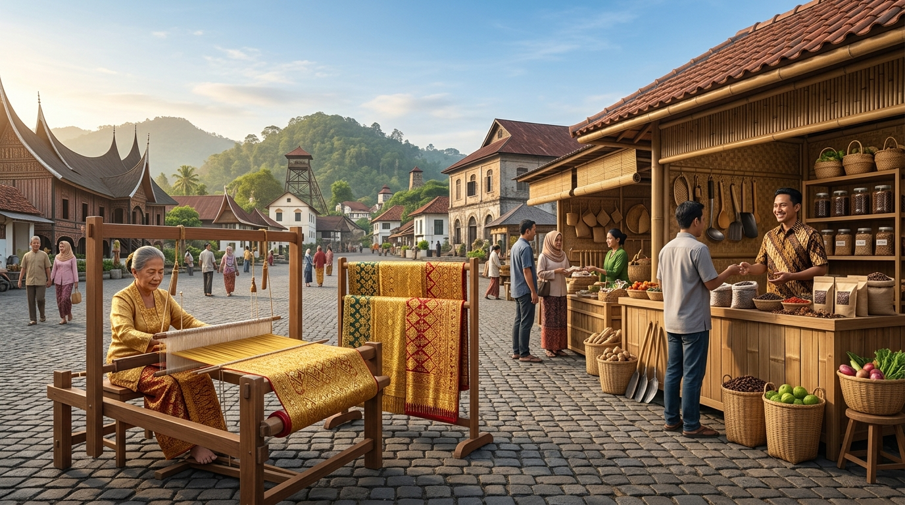

Pemerintah Kota Sawahlunto • Koperasi & UMKM
Dinas Koperasi, Usaha Kecil Menengah, Perindustrian dan Perdagangan Kota Sawahlunto
Mendorong kemandirian ekonomi rakyat, melestarikan warisan adiluhung Sentra Songket Silungkang, memfasilitasi legalitas UMKM, dan menjaga stabilitas 4 pasar tradisional daerah.

Warisan Budaya & Denyut Pasar Sawahlunto
Harmoni Kearifan Lokal Songket Silungkang & Ketahanan Pangan Rakyat
Update Harian Pasar
Pantauan Harga Bahan Pokok (SPH Bapok)
Sumber Data: Surveyor Pasar Sawahlunto & Pasar Sapan (Update: September 2026)
Fasilitasi & Pelayanan Publik
4 Pilar Layanan Unggulan Daerah
Komitmen pelayanan terpadu bagi pelaku usaha mikro, perajin sentra industri, pedagang pasar, serta masyarakat konsumen.
Publikasi Resmi
Lihat Semua Berita